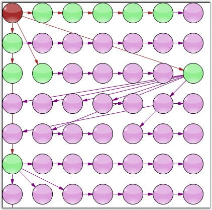
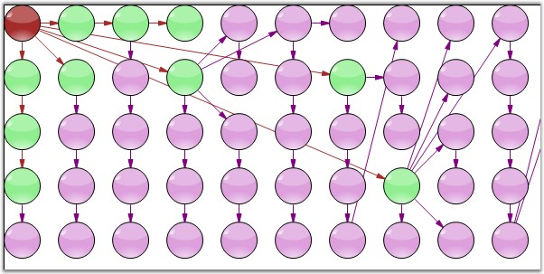

The TableLayoutManager class can be used to arrange various objects in columns and rows in a table format. The TableTreeLayoutManager arranges nodes in a Table layout, positioning the nodes in a rectangular grid of cells, with each node spanning over a single table cell. The TableTreeLayoutManager is used when tabular relationships need to be depicted. The various properties of the TableTreeLayoutManager are listed below.
The model and the number of rows and column values are passed as parameters to the TableLayoutManager class. The parameters and properties involved with the TableLayoutManager are listed in the below table.
|
Property |
Description |
|
Model |
The Model to be attached to the Layout Manager. |
|
CellSizeMode |
Gets / sets the cell size mode with one of the following options: · EqualToMaxNode · MinimalTable · Minimal |
|
MaxSize |
Gets / sets the size of each table cell. It is an integer type value. |
|
MaxColumnCount |
Represents the maximum horizontal cell count in the table. It is an integer type value. |
|
MaxRowsCount |
Represents the maximum vertical cell count in the table. It is an integer type value. |
|
HorizontalSpacing |
Defines the horizontal offset between adjacent nodes. |
|
VerticalSpacing |
Defines the vertical offset between adjacent nodes. |
Programmatically, the table layout manager instance should be created with the respective arguments, assigned to the Layout Manager and updated as follows.
|
[C#]
TableLayoutManagermt lLayout=new TableLayoutManager(this.diagram1.Model, 7, 7); tlLayout.VerticalSpacing = 20; tlLayout.HorizontalSpacing = 20; tlLayout.CellSizeMode = CellSizeMode.EqualToMaxNode; tlLayout.Orientation = Orientation.Horizontal; tlLayout.MaxSize = new SizeF(500, 600);
this.diagram1.LayoutManager = tlLayout; this.diagram1.LayoutManager.UpdateLayout(null);.AttachModel(model1); documentExplorer1.Dock = DockStyle.Right; documentExplorer1.BackColor = System.Drawing.SystemColors.Window; documentExplorer1.Location = new System.Drawing.Point(0, 377); documentExplorer1.Size = new System.Drawing.Size(200, 100); documentExplorer1.BorderStyle = System.Windows.Forms.BorderStyle.Fixed3D; documentExplorer1.ShowNodeToolTips = true; |
|
[VB]
Dim lLayout As TableLayoutManagermt = New TableLayoutManager(Me.diagram1.Model, 7, 7) tlLayout.VerticalSpacing = 20 tlLayout.HorizontalSpacing = 20 tlLayout.CellSizeMode = CellSizeMode.EqualToMaxNode tlLayout.Orientation = Orientation.Horizontal tlLayout.MaxSize = New SizeF(500, 600)
Me.diagram1.LayoutManager = tlLayout Me.diagram1.LayoutManager.UpdateLayout(Nothing).AttachModel(model1) documentExplorer1.Dock = DockStyle.Right documentExplorer1.BackColor = System.Drawing.SystemColors.Window documentExplorer1.Location = New System.Drawing.Point(0, 377) documentExplorer1.Size = New System.Drawing.Size(200, 100) documentExplorer1.BorderStyle = System.Windows.Forms.BorderStyle.Fixed3D documentExplorer1.ShowNodeToolTips = True |

Figure 48: Horizontal Orientation

Figure 49: Vertical Orientation